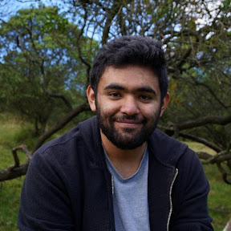
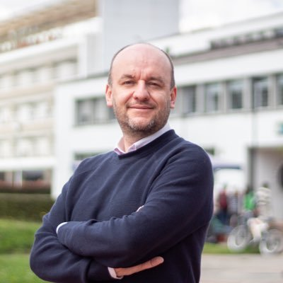
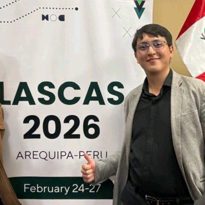

Equipo
Integrantes

Director del semillero
Johan Sebastián Eslava Garzón
Ph.D., M.Sc. Profesor del Departamento de Ingeniería Eléctrica y Electrónica de la Facultad de Ingeniería, Universidad Nacional de Colombia, Sede Bogotá. Dirige las dos líneas de ChipLabUN: exploración de aritmética digital con aprendizaje por refuerzo y diseño de ASIC de código abierto.
jseslavag@unal.edu.coLínea 1 · IA para diseñar chips
Aprendizaje por refuerzo y aritmética aproximada
Juan Sebastián Caviedes Bernal
Exploración multiagente y escalamientojcaviedesb@unal.edu.co
Miguel Ángel Alvarado Senejoa
Línea 1mialvarados@unal.edu.co
Juan David Rodríguez Hernández
Línea 1juarodriguezhe@unal.edu.coLínea 2 · Chips que ejecutan IA
Diseño, fabricación y medición de ASIC
Diana Maldonado
Diseño y verificación del ASIC brUNo
Kevin Patiño
Verificación e implementación física+